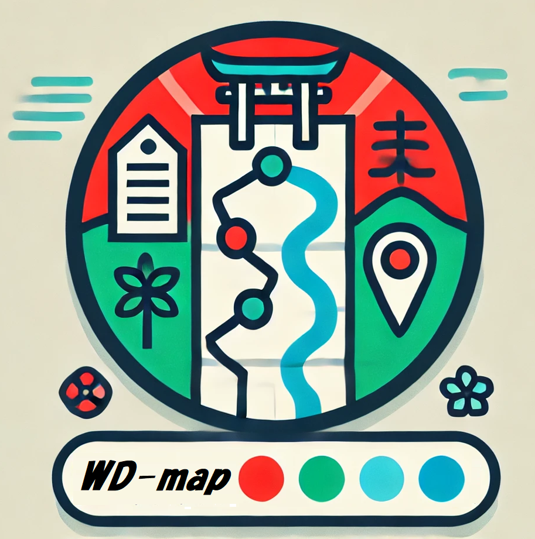

WD巡礼マップ
Wikidataによる巡礼ルート作成
作成したMAP
選択したMAPの合成
QR非表示
QR表示
MAP編集
※「このページ」または「MAPが表示されたページ」の
URL
を
ブックマーク
や
共有
する
ことでも，MAPの保存・共有ができます．
MAP生成のエリア
：
日本に限定
世界地図
詳細設定
国を選択:
日本の地域を選択:
北海道地方
東北地方
関東地方
北陸地方
東海地方
近畿地方
中国地方
四国地方
九州地方
都道府県を選択:
[
TOPページ
] [
使い方
] [
技術解説
] [
ソースコード
]
Endpoint:
MAP生成用のクエリ
：
→下記のクエリ内の
#GET-LIST#
の部分を，データ検索結果から選択した「分類」に置き換えて検索します．
#defaultView:Map{"hide":["?loc","?layer"]} SELECT ?item ?itemLabel ?loc ?layer (URI(CONCAT("https://kgs.hozo.jp/sample/details.html?key=",str(?item))) AS ?detail) ("■Wikidataでの定義を見る" AS ?detailTitle) (URI(CONCAT("https://www.google.com/maps/dir/現在地/", (strafter((REPLACE(str(?loc),"\\)",""))," ")) , ",", strbefore((REPLACE(str(?loc),"Point\\(",""))," ")) ) AS ?map) ("■経路検索" AS ?mapTitle) (SAMPLE(?addr) AS ?address)(SAMPLE(?web) AS ?w) (SAMPLE(?img) AS ?image) (CONCAT("(",SAMPLE(?kana),")") AS ?nameKana) (?itemLabel AS ?name) WHERE { #GET-LIST# FILTER(lang(?layer)="ja") ?item wdt:P625 ?loc. #位置情報の取得 ?item wdt:P17 wd:Q17. OPTIONAL{?item wdt:P1814 ?kana.} OPTIONAL{?item wdt:P18 ?img.} OPTIONAL{?item wdt:P6375 ?addr.FILTER(lang(?addr)="ja")} OPTIONAL{?item wdt:P856 ?web.} SERVICE wikibase:label { bd:serviceParam wikibase:language "ja". } } GROUP BY ?item ?itemLabel ?loc ?layer LIMIT 100000